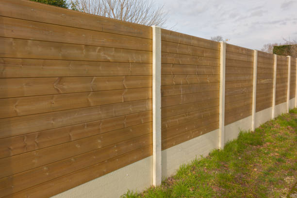

Grand Blanc Michigan
info@superiorfenceandrail.pro
Grand Blanc Michigan
info@superiorfenceandrail.pro

Transform your Grand Blanc Michigan yard with custom fencing solutions. From decorative to privacy fences, we deliver superior craftsmanship and unmatched customer satisfaction. Contact us for your free estimate now!
Click Here To Call Us (877) 848-1711When it comes to reliable and high-quality fencing services in Grand Blanc Michigan our company stands out as the trusted choice for residential and commercial properties. Whether you need a sturdy privacy fence, a secure chain-link fence, or an elegant ornamental design, we specialize in installing and repairing fences to enhance the safety, privacy, and aesthetics of your property.
Our team of experienced professionals uses only top-grade materials and cutting-edge techniques to deliver fences that are built to last. We offer a wide range of fencing options, including wood, vinyl, aluminum, and steel, tailored to meet your specific needs and style preferences. Each project begins with a detailed consultation to ensure your vision becomes a reality, no matter the size or complexity.
Choosing us means you’re selecting a company dedicated to excellence, timely service, and customer satisfaction. We understand that fences play a critical role in protecting your property and boosting its curb appeal. That’s why we prioritize durability, precision, and a flawless finish.
If you’re searching for expert fence installation or repair services in Grand Blanc Michigan look no further. Contact us today for a free quote and discover why we’re the go-to fencing company in Grand Blanc Michigan . Let us help you secure and beautify your property with a fence you can depend on.
Residential & commercial Fences
Quality services at affordable prices
Immediate 24/ 7 emergency services


When it comes to securing your property, enhancing privacy, or adding curb appeal, our expert fence installation services in Grand Blanc Michigan are your trusted choice. We specialize in providing top-notch fencing solutions tailored to your unique needs. Whether you’re looking for wood, vinyl, chain-link, or ornamental metal fences, our skilled professionals ensure precise installation with durable materials that withstand the test of time.
At , we prioritize customer satisfaction by offering a seamless experience from start to finish. Our team takes the time to understand your requirements, recommend the best options, and deliver results that exceed expectations. With years of experience and a proven track record, we are committed to craftsmanship and attention to detail, ensuring your fence not only serves its purpose but also enhances the aesthetic appeal of your property.
Why choose us? We use premium-quality materials designed to handle Grand Blanc Michigan 's weather conditions, ensuring long-lasting performance. Our licensed and insured installers follow industry best practices, ensuring every project is completed safely and efficiently. Additionally, we offer competitive pricing and flexible scheduling to fit your budget and timeline.
Transform your residential or commercial property with the best fence installation services in Grand Blanc Michigan . Contact us today for a free consultation, and let us help you secure your space with style and functionality.
Residential & commercial Fences
Quality services at affordable prices
Immediate 24/ 7 emergency services
For a high level of security that is both effective and flexible, electric fencing is an excellent option. Our electric fencing installation services in Grand Blanc Michigan provide a solution that deters intruders while being easy to manage. Whether for residential use, commercial properties, or farmland, electric fencing can be customized to fit your needs. Our team is knowledgeable about local regulations and safety measures, ensuring that your system is compliant and effective. Choose us for our commitment to superior technology and quality service that enhances your property’s security.

Bamboo fencing is a splendid choice for those looking to add a unique and natural aesthetic to their property. At Fences, we specialize in bamboo fence installation that combines beauty and sustainability.
Bamboo is a renewable resource known for its strength and flexibility, making it an excellent choice for fencing. Our bamboo fences can provide privacy, enhance your landscape's beauty, and contribute to an environmentally friendly footprint.
Our team works closely with you to ensure that your bamboo fence meets your design and functionality needs. We handle everything from design to installation, ensuring a seamless process that leaves you with a standout feature for your property.
If you’re interested in adding eco-friendly charm to your property trust Fences to provide expert bamboo fence installation that exceeds your expectations. Elevate your outdoor spaces with our beautiful bamboo solutions while embracing sustainable practices.

Wrought iron fencing adds a touch of elegance to any property, but it requires proper care and maintenance to stand the test of time. Our wrought iron fence restoration and installation services specialize in both repairing existing fences and installing new ones. Our team understands the intricacies involved in wrought iron work, ensuring your fence not only looks beautiful but also functions perfectly. We focus on quality craftsmanship and customer satisfaction, making us the best choice for all your wrought iron fencing needs.

No two properties are alike, and at Fences, we understand that your fencing needs are unique. Our custom fence design and build services allow you to create a fencing solution that perfectly matches your property’s style, security requirements, and functional needs. From classic designs to modern aesthetics, our team works with you to bring your vision to life.
We start with a comprehensive consultation, discussing your ideas, preferences, and any specific challenges presented by your site. Our skilled designers then create custom plans that reflect your vision while adhering to local regulations. Expert installation follows, ensuring your fence is not just a border but a stunning enhancement to your property. Trust Fences for custom fence solutions that truly stand out.
Keeping horses and livestock secure is crucial for their safety and your peace of mind. Our horse and livestock fencing services in Grand Blanc Michigan offer solutions tailored to rural properties that prioritize both security and aesthetic appeal. With materials ranging from wood to high-tensile wire, we create fencing designed to contain livestock effectively without compromising their welfare. Our experienced team understands the nuances of livestock behavior and will ensure fencing meets your specific needs. Choose us for expert advice and high-quality installation, ensuring your animals remain safe and secure.
Enhance your garden’s appeal and protect valued plants with our garden and landscape fencing services in Grand Blanc Michigan . Our decorative solutions not only provide a visual barrier but also keep animals and pests at bay. Available in a variety of styles, including picket, lattice, and more, our fencing options cater to different aesthetics and functional needs. Our experienced team guides you through the selection and installation process, ensuring your garden is beautifully framed and secure. Choose us for our commitment to quality craftsmanship and durability in landscape fencing solutions.

Living in a noisy environment can affect the quality of life. Our noise reduction fencing services in Grand Blanc Michigan are designed to provide a barrier that minimizes sound pollution, creating a more tranquil outdoor space. We utilize specialized materials and designs that absorb and deflect sound, providing you with a peaceful environment to enjoy your property. Our team is skilled at assessing your unique noise situation and recommending the best solutions tailored to your needs. Choose us for innovative designs and effective turf solutions that enhance your living experience.

Ornamental steel fencing combines durability with aesthetic appeal, making it an ideal choice for homeowners and businesses alike. This type of fencing offers superior strength while providing an elegant boundary that enhances your property’s curb appeal. At Fences, we specialize in ornamental steel fencing installation in Grand Blanc Michigan delivering stylish and robust fencing solutions tailored to your needs.
Our ornamental steel fences come in various designs, allowing you to choose a style that complements your property while providing the security you need. The galvanized steel construction ensures resistance to rust and weather damage, making it a long-lasting option that requires minimal maintenance.
Choosing ornamental steel fencing means you don't have to compromise on style for security. Our skilled installation team ensures that your fence is securely installed, adhering to local regulations and industry best practices. We take pride in our attention to detail and commitment to delivering a product that meets your expectations.
What sets Fences apart in Grand Blanc Michigan is our dedication to providing exceptional customer service and craftsmanship. We collaborate with you throughout the process, ensuring your visions are reflected in the final product. Our transparent pricing model means you know exactly what to expect regarding costs.
Enhance your property’s security and beauty with ornamental steel fencing from Fences. Contact us today to learn more about our services and how we can transform your outdoor space in Grand Blanc Michigan .

For maximum security and durability, stone and concrete fencing present the perfect solution for property owners . These robust materials are well-suited for both residential and commercial properties, providing a solid barrier against noise and unwanted intrusion. Our stone and concrete fencing services involve expert installation and design that considers aesthetics and functionality. With a commitment to using high-quality materials, we ensure your fencing will withstand the elements and provide long-lasting security. Trust us to deliver impressive results that enhance the integrity and safety of your property.
Years Experience
Expert Technicians
Satisfied Clients
Compleate Projects
At Superior Fence, we pride ourselves on being the premier fencing provider across all cities in Grand Blanc Michigan . Whether you’re looking for residential, commercial, or custom fencing solutions, our team is committed to delivering top-quality results, exceptional customer service, and unmatched craftsmanship.
Our expert fence installers are experienced in working with a variety of materials, including wood, vinyl, chain-link, and wrought iron, ensuring that your fence is built to last while complementing the aesthetics of your property. We understand that every project is unique, which is why we offer personalized solutions tailored to your specific needs and budget.
What sets us apart from other fencing companies is our dedication to customer satisfaction. From the initial consultation to project completion, we prioritize clear communication, transparency, and reliability. Our team works efficiently to minimize disruption to your daily life while ensuring that your new fence is installed to the highest industry standards.
Superior Fence also stands behind our work with a strong warranty on both materials and labor, providing you with peace of mind for years to come. As a locally trusted company in Grand Blanc Michigan we have built a solid reputation for being the go-to choice for all fencing projects.
Choose Superior Fence for your next fencing project in Grand Blanc Michigan and experience the difference of working with a company that truly cares about quality and customer satisfaction.
In today's world, ensuring your personal space is respected and your privacy is protected has become increasingly important. A well-constructed privacy fence is not just an investment in your home; it’s a statement of your desire for tranquility amidst the chaos of modern life. At Fences, we specialize in privacy fence installation tailored to fit your specific needs and tastes.
Choosing us means opting for quality craftsmanship and premium materials that will stand the test of time. Our experts prioritize your satisfaction, ensuring that your fence not only enhances your property's aesthetics but also offers security and peace of mind. We use advanced techniques and eco-friendly materials wherever possible, giving you a product you can depend on, while also caring for the environment.
Imagine enjoying your backyard without worrying about prying eyes or noise from the street. Our privacy fences come in various styles and heights, allowing you to select the perfect blend of functionality and beauty. We embrace cutting-edge trends in fencing, incorporating innovations that enhance durability and design.
Don't compromise on your privacy. Let us help you create a serene outdoor space where you can relax, entertain friends, or spend time with your family. Join countless satisfied customers who have turned their backyards into sanctuaries with our expertly installed privacy fences.
Wooden fences provide a classic look and natural charm to any property. However, they can wear over time due to weather conditions prevalent . Our wooden fence repair services include everything from minor fixes to complete restorations, ensuring your fence is functional and beautiful. Additionally, if you're considering installing a new wooden fence, we offer custom designs that complement your property while providing security and privacy. Our skilled craftsmen are experienced in various wood types, ensuring that your fence will last for years to come. We take pride in our craftsmanship and dedication to customer satisfaction, making us your best choice for wooden fence services .
Vinyl fencing has quickly become a popular choice among homeowners due to its low-maintenance and durability. Unlike wood, vinyl does not warp, rot, or require painting, making it an attractive option for long-term use. Our vinyl fencing services include expert installation and repair, ensuring that your fence not only looks great but also remains functional over the years. Available in various colors and designs, vinyl fences can enhance the beauty and value of your property while providing the required privacy and security. Choose us for our commitment to quality, variety, and exceptional customer service, making your vinyl fence installation a seamless experience.
Chain-link fencing is a practical and cost-effective solution for many residential, commercial, and industrial applications. It provides reliable security, visibility, and protection for your property while allowing airflow and light to pass through. At Fences, we are experts in chain-link fence installation, offering tailored solutions to meet varying needs across Grand Blanc Michigan .
Our chain-link fences are built to last, utilizing high-quality materials that resist rust, corrosion, and weather-related damage. You can choose from various heights and finishes, ensuring your fence meets your specific requirements while blending seamlessly with your landscape. Whether you're enclosing a backyard, securing a commercial lot, or creating a barrier around a playground, we have just the right chain-link fencing solution for you.
Installation is essential for the longevity and effectiveness of any fence, and our skilled professionals prioritize precision in every project. We adhere to established best practices to ensure your chain-link fence stands robustly over time. Our team is well-versed in local codes and regulations, ensuring your installation complies with all legal requirements.
Choosing Fences for your chain-link fence installation means opting for a partnership built on trust, integrity, and quality. We pride ourselves on our strong work ethic and dedication to providing the best outcome for our clients . Our transparent pricing ensures you know the costs upfront, eliminating any surprises along the way.
Not only do we deliver quality installations, but we also prioritize customer education. We take the time to discuss maintenance options and answer any questions you might have, so you feel confident in your chain-link fence investment. For a practical fencing solution that offers security without compromising style, choose Fences as your go-to service provider for chain-link fence installation .
For those looking to combine security with elegance, decorative aluminum fencing is an ideal choice. At Fences, we offer premium aluminum fencing solutions designed to enhance the beauty of your property while providing the durability of traditional materials.
Our decorative aluminum fences come in a variety of styles and colors, allowing homeowners to customize their outdoor spaces effortlessly. These fences are not only beautiful but also require minimal maintenance, making them a smart investment for any property owner.
Through our skilled installation services, we ensure that your fencing is secure and well-constructed, providing the peace of mind you deserve. Our knowledgeable team can guide you through the design and selection process, offering expert advice on how to best meet your fencing needs.
Choosing Fences means selecting a partner committed to your satisfaction. We understand the importance of first impressions, and the right decorative aluminum fence can elevate your property's curb appeal. Transform your outdoor spaces with us today.
The timeless charm of a picket fence brings warmth and personality to any home. Our picket fence installation services provide residents with a stylish way to define their properties while enhancing curb appeal. Available in various heights and styles, our picket fences can be made from wood or vinyl, allowing you to choose according to your taste and maintenance preferences. Each installation is carried out with precision and care, ensuring a sturdy and beautiful finish. Trust us to deliver a quality picket fence that reinforces your home's unique character while providing a welcoming atmosphere for your family and guests.
Split rail fencing offers a rustic, charming solution for homeowners who desire an open, airy feel around their properties. Ideal for defining boundaries without creating a solid barrier, our split rail fence installations are perfect for farms, gardens, and large yards. They are particularly functional in rural settings and can be complemented with other fencing types for enhanced privacy and security. We carefully select high-quality materials to ensure longevity and resilience against outdoor elements. Our exceptional service and commitment to excellence set us apart as the preferred choice for split rail fencing .
Proper maintenance is crucial to preserving the beauty and longevity of your fences. Fence staining and maintenance plays an essential role in protecting your investment and enhancing the appearance of your property. At Fences, we offer professional fence staining and maintenance services in Grand Blanc Michigan ensuring your fences look stunning year-round.
A well-stained fence not only improves its aesthetic appeal but also protects it from environmental damage, such as UV rays, moisture, and pests. Our fence staining services utilize high-quality products that penetrate deep into the wood, providing a long-lasting finish that revitalizes and beautifies your fence.
Our team of experts will assess your fence's condition and provide tailored recommendations for maintenance. Whether it’s applying stain, sealing, painting, or performing necessary repairs, our goal is to ensure your fence remains in excellent condition over time. Additionally, regular maintenance can help you avoid costly repairs in the future, protecting your investment.
Choosing Fences for your fence staining and maintenance needs means choosing quality and reliability. Our dedicated team understands the significance of proper care and attention to detail when it comes to maintaining your fence. We adhere to the highest industry standards and practices, ensuring that our work meets your expectations and enhances the value of your property.
Our customer-centric approach allows us to provide personalized solutions that cater to your specific needs and timelines. We pride ourselves on open communication, ensuring that you are informed every step of the way.
Don’t let neglect diminish the beauty of your fence. Trust Fences for all your fence staining and maintenance needs and experience the difference that professional care can make.
Safety is paramount when it comes to pool ownership, especially if you have children or pets. A pool safety fence is an essential addition that helps prevent accidents and ensures everyone can enjoy your pool safely. At Fences, we specialize in pool safety fence installation providing robust solutions that adhere to local codes and safety standards.
Our team has extensive experience in designing and installing pool safety fences that combine security with aesthetic appeal. We offer a variety of materials, including aluminum, mesh, and vinyl, each designed to withstand harsh outdoor conditions while providing clear visibility for ease of monitoring.
A well-installed pool safety fence not only protects your loved ones but also adds an attractive finishing touch to your pool area. Our professional installation team is committed to precision and quality, ensuring that your fence is securely anchored and aesthetically pleasing.
What sets Fences apart is our dedication to understanding your specific needs. We work closely with you to design a fence that fits your requirements while complying with safety regulations. Our transparent pricing ensures you're informed every step of the way, with no hidden fees.
Choosing us means you can have peace of mind knowing that your pool area is safe and secure. Our commitment to customer satisfaction and expert craftsmanship has earned us a reputation as one of the leading providers of pool safety fences in Grand Blanc Michigan .
Don’t compromise on safety. Trust Fences to install a high-quality pool safety fence that protects your family and enhances your outdoor living space.
Keeping your beloved pets safe while allowing them the freedom to roam is a priority for many homeowners. Our pet containment fencing services in Grand Blanc Michigan specialize in creating secure environments for your pets. Whether you need a complete fence or a specialized containment system, we offer various options to suit different pet sizes and behaviors. Our fences are designed to be durable and sturdy while aesthetically pleasing to match your home. With our team’s expertise and personalized service, you can trust that your pets will be safe and secure within their designated areas. Choose us for our knowledge and passion for pet safety in fencing.
In today’s world, the security of your business premises is of utmost importance. Security fencing provides a physical barrier that deters potential intruders and protects your assets. At Fences, we offer comprehensive security fencing solutions for businesses across Grand Blanc Michigan tailored to meet the needs of various commercial applications.
Our security fencing options are designed to withstand impacts and resist tampering, providing an added layer of protection for your business. We offer various materials, including chain-link, ornamental steel, and barbed wire, allowing you to choose the best solution that fits your specific security needs while maintaining an attractive appearance.
Our expert installation team is dedicated to providing high-quality workmanship, ensuring your fencing is installed for maximum effectiveness. We understand that every business has unique security requirements, and our team will collaborate closely with you to assess your needs and recommend the most appropriate fencing solution.
What sets Fences apart from other fencing contractors is our commitment to client satisfaction and our extensive experience in the industry. We prioritize clear communication throughout the installation process, ensuring you are informed about the timeline, pricing, and any challenges we might encounter.
Choosing our security fencing services means investing in the protection and peace of mind that your business deserves. We understand the importance of securing your premises, and our high standards of quality and customer service reflect our dedication to helping you achieve your security goals .
Protect your business today with a tailored security fencing solution by Fences. Together, we can create a secure environment for your operations and enhance the safety of your assets.
Industrial properties require heavy-duty fencing that can withstand the demands of the environment. Our industrial chain-link fence installation services specialize in creating secure boundaries for warehouses, factories, and manufacturing facilities. We understand the unique needs of industrial sites, and our fences are designed to provide maximum security while allowing for visibility and airflow. Available in various heights and configurations, our chain-link fences can be customized to meet your specific requirements. Choose our experienced team for reliable service, quality materials, and installations that exceed industry standards.
Keeping your construction site secure and compliant with local regulations is essential during every phase of a project. At Fences, we specialize in temporary fencing solutions designed to safeguard your site while minimizing liability and ensuring safety.
Our temporary fences are quick to set up, durable, and adjustable to fit the various dimensions of your project. Whether you need to restrict access to a short-term site or define a longer-term construction zone, our solutions can be tailored to your specific needs, including options for fully enclosed and open fencing.
Choosing our services means benefiting from our experience and expertise. We understand local regulations regarding construction site fencing and ensure compliance to keep your project moving without delays. Our dedicated team provides ongoing support and service to ensure your fencing remains effective throughout the project duration.
Join the ranks of satisfied construction companies who have relied on Fences for their temporary fencing needs. Let us help you maintain a secure and professional worksite, enhancing safety for your employees and the public.
For businesses looking to balance aesthetic appeal with effective security, aluminum fencing is an excellent choice. At Fences, we provide commercial aluminum fencing solutions that offer durability, low maintenance, and an elegant appearance.
There are numerous advantages to selecting aluminum fencing for your commercial property, such as resistance to rust and corrosion, which means it will look great for years to come without intensive upkeep. Our aluminum fences come in various designs tailored to fit your branding and needs, providing an attractive perimeter that meets security demands.
Our team is committed to delivering high-quality fencing installation, using only the finest materials and methods to ensure your fence stands the test of time. We work collaboratively with you to understand your property requirements, ensuring optimal functionality and safety.
Choosing Fences means trusting a partner dedicated to quality service and customer satisfaction. With many successful projects completed in Grand Blanc Michigan we have earned a reputation as the go-to provider for commercial aluminum fencing solutions.
Managing access to your property is essential, and at Fences, we specialize in providing state-of-the-art access control and gate systems designed to protect your property. Our solutions integrate seamlessly with your existing fencing, offering security without compromising aesthetics.
From automated gates to keypad entry systems, our team has the expertise to design and install the best access solutions for your needs. We ensure that the systems we provide are user-friendly, providing smooth entry and exit for residents and authorized personnel while restricting unwanted access. When you choose Fences for your access control and gate systems in Grand Blanc Michigan you are choosing a partner dedicated to your safety and satisfaction.
For properties requiring a higher level of security, barbed wire fencing is an optimal choice. At Fences, we specialize in the installation of durable and effective barbed wire fencing designed to deter intruders and safeguard your assets.
Our barbed wire fences are suitable for industrial properties, farms, and other high-security locations. They act as a deterrent while being aesthetically unobtrusive. We use robust materials and professional installations to ensure your fence withstands harsh weather conditions and remains effective over time.
Safety is a primary concern during installation, and our experienced team adheres to all local guidelines while maintaining the highest safety standards. We believe in providing our clients with unparalleled service combined with quality workmanship and materials.
Choose Fences for your barbed wire fencing solutions . Join others who have trusted us to bolster their perimeter security with our expert services. Keep your property safe and secure with a barbed wire fence installation that fits your needs.
Privacy fencing is essential for commercial properties seeking to protect their assets while maintaining an inviting environment. At Fences, we offer specialized commercial privacy fencing solutions that combine security with style.
Our privacy fences are available in various materials, including wood, vinyl, and composite materials, catering to the specific requirements of your property. They provide an effective barrier against noise, prying eyes, and traffic, allowing you to create a serene environment for employees and clients.
We understand the importance of timely installation and minimal disruption to your business operations. Our skilled team works with you to ensure a seamless experience from design to implementation, providing quality workmanship that meets your timeline and requirements.
By choosing Fences, you benefit from our dedication to precision and customer satisfaction. Let us help you create a safe and attractive space with our commercial privacy fencing. Your business deserves the best in security and aesthetics.
Safety should never be compromised, especially for properties that require strict security measures. Our anti-climb fence installation services are designed to deter intruders and enhance your property’s safety. We utilize specialized fencing designs that discourage climbing, coupled with robust installation techniques to ensure long-lasting performance. Often used in industrial and high-security environments, our anti-climb fencing solutions provide peace of mind. With years of industry experience, we’re committed to delivering exceptional service that meets your security needs without compromising on quality. Choose us for professional installations you can trust.
For industrial facilities, perimeter fencing is essential for security, safety, and asset protection. A well-constructed perimeter fence defines the boundaries of your property while deterring unauthorized access. At Fences, we specialize in perimeter fencing for industrial facilities offering fencing solutions that stand the test of time.
We understand the unique challenges faced by industrial facilities, and our perimeter fencing is designed to provide a robust barrier that enhances security without compromising accessibility. Our selection includes chain-link, welded wire, and barbed wire fencing, ensuring you find an ideal solution tailored to your facility's specific demands.
Our professional installation team pays meticulous attention to detail, ensuring that every fence is installed securely and adheres to local regulations. We consider factors such as site conditions, potential hazards, and security requirements during the installation process to deliver a durable and effective perimeter fencing solution.
What differentiates Fences is our unwavering commitment to quality and customer satisfaction. We work closely with you to understand your unique needs, providing personalized service that guarantees the best outcome. Our transparent pricing model means no hidden fees, allowing for budgeting clarity.
Investing in perimeter fencing is a crucial step in protecting your industrial facility. With Fences, you can count on high-quality materials and expert craftsmanship for perimeter fencing that meets the standards of your industry. Contact us today to discuss your perimeter fencing needs and secure your facility.
For warehouse and storage unit facilities, security is paramount to protect valuable inventory and assets. Effective fencing solutions provide a barrier against theft and trespassing while ensuring clear access for authorized personnel. At Fences, we specialize in designing and installing fencing for warehouses and storage units delivering top-notch security solutions tailored to your needs.
Our fencing options include chain-link, solid panel, and barbed wire methods, providing varying degrees of security suitable for your specific environment. We collaborate with you to design a fencing solution that perfectly balances accessibility for your staff while keeping unauthorized individuals at bay.
The importance of proper installation cannot be overstated. Our experienced team adheres to all local regulations, ensuring that your fencing solution complies with industry standards while offering the strength and resilience necessary for your facility.
What sets Fences apart is our dedication to customer service and quality workmanship. We approach every project with a keen eye for detail, ensuring your needs are met and that the installation process is hassle-free. Our commitment to transparency means you will always know what to expect regarding pricing and timelines.
Ensure the security of your warehouse and storage units with the quality fencing solutions from Fences. Contact us today to discuss your fencing project, and let us help you create a safe, secure environment for your valuable assets.
In an age of environmental consciousness, choosing eco-friendly fencing solutions is essential for homeowners and businesses alike. At Fences, we offer a range of sustainable fencing options that are not only friendly to the planet but also durable and stylish. Our eco-friendly materials include recycled wood, composite materials, and bamboo that provide a unique aesthetic while offering superior strength.
Our team is passionate about responsible practices, ensuring that our installation methods also minimize environmental impact. We work with you to determine the best eco-friendly fencing options that suit your needs and blend seamlessly with your landscape. By choosing Fences for your eco-friendly fencing solutions you are making a positive choice for both your property and the environment.
Choosing the right fencing materials for Grand Blanc Michigan 's unique climate is essential to ensure durability, functionality, and style. Whether you're enhancing your property's security, privacy, or curb appeal, high-quality fencing materials make all the difference. At Fences, we specialize in offering fencing solutions designed to withstand Grand Blanc Michigan 's weather conditions, including intense sun, high humidity, and occasional heavy storms.
Durable and Weather-Resistant Materials
Our premium fencing options include vinyl, aluminum, and treated wood, which resist warping, cracking, and fading even under Grand Blanc Michigan 's extreme heat. These materials not only maintain their appearance over time but also require minimal maintenance, saving you time and effort.
Stylish Options for Every Property
From sleek modern designs to traditional styles, we offer fencing options that complement any property. Choose from privacy fences, picket fences, and ornamental styles to suit your preferences. Our materials are available in various colors and finishes, ensuring a perfect match for your home or business.
Expert Installation and Customization
We understand that every property is unique. That’s why we provide tailored fencing solutions to meet your specific needs. Our skilled team handles everything from design consultation to installation, ensuring a seamless process and flawless results.
Invest in fencing materials built to endure Grand Blanc Michigan 's climate while enhancing your property’s value and security. Contact us today to explore our high-quality options and get started on your fencing project!
The unincorporated village of Grand Blanc, or Grumlaw, was a former Indian campground first settled by Jacob Stevens in spring 1822. Several years later, settlers improved the Indian trail to Saginaw; they laid out and staked it in 1829 as Saginaw Road. Grand Blanc Township was formed in 1833 with area that would become the city. The township center began to boom in 1864 with the arrival of the railroad (now known as the CSX Saginaw Subdivision). With the post office there, the village was called Grand Blanc Centre by 1873, with the former Grand Blanc assuming the name Gibsonville (not Gibbonsville.)
The timeline for fence installation in Grand Blanc Michigan depends on the type and size of the project, but most installations are completed within 1-3 days.
Yes, we provide warranties on materials and workmanship for all fences installed .
Absolutely! Our fences are made with high-quality materials designed to withstand the climate and weather conditions in Grand Blanc Michigan .
Yes, Superior Fence provides free, no-obligation quotes for all fence installation projects .
Popular styles in Grand Blanc Michigan include picket fences, privacy fences, and decorative aluminum fences.
Yes, Superior Fence provides professional fence repair services to restore the functionality and appearance of your fence.
Yes, we have the expertise to install fences on uneven or sloped terrains .
Yes, Superior Fence offers custom fence designs to match your property’s style and requirements.
Yes, Superior Fence specializes in installing pool fences that meet safety standards in Grand Blanc Michigan .
Yes, we use eco-friendly materials and processes to minimize the environmental impact of our fences .
Yes, we design our fences with safety in mind to protect children in your Grand Blanc Michigan property.
Simply contact Superior Fence to schedule a consultation and begin your fencing project .
Maintenance varies by material. We provide guidance on cleaning, staining, and repairs to keep your fence in top shape in Grand Blanc Michigan .
Yes, we offer flexible financing options to make your fence installation affordable .
Our experts will help you choose the ideal fence based on your needs, preferences, and property style in Grand Blanc Michigan .
Depending on local regulations, you may need a permit to install a fence . We can help you navigate the permitting process.
Privacy fences offer seclusion, enhanced security, and noise reduction, making them an excellent choice for homes .
Absolutely! We provide a variety of colors and finishes to ensure your fence complements your Grand Blanc Michigan property.
The lifespan depends on the material used. Wood fences typically last 10-15 years, while vinyl and aluminum fences can last 20+ years .
Yes, Superior Fence offers fence installation services for both residential and commercial properties .
Yes, our fences are designed to keep your pets safe and secure in your Grand Blanc Michigan yard.
Yes, Superior Fence offers fence removal services as part of your installation project in Grand Blanc Michigan .
Yes, Superior Fence is experienced in meeting HOA guidelines and can ensure your fence complies with regulations in Grand Blanc Michigan .
Superior Fence installs a wide variety of fences including wood, vinyl, chain-link, aluminum, and privacy fences tailored to your specific needs.
Absolutely! Contact Superior Fence to schedule a convenient consultation for your fencing project .
We accept a variety of payment methods, including credit cards, checks, and financing options for projects .
We offer a range of fence heights to meet your privacy and security needs typically from 4 to 8 feet.
Superior Fence is known for exceptional craftsmanship, high-quality materials, and outstanding customer service in Grand Blanc Michigan .
Yes, we offer staining and painting services to enhance the appearance and durability of your fence .
Fence installation costs vary based on material, size, and design. Contact Superior Fence for a competitive quote tailored to your Grand Blanc Michigan project.
Superior Fence in Grand Blanc Michigan did an amazing job with our fence installation. The crew was on time, friendly, and professional. The final result was exactly what we wanted. We’re very happy with our new fence!
Profession
Superior Fence provided exceptional service in Grand Blanc Michigan . From consultation to installation, they were professional and timely. The new fence is exactly what we wanted, and we couldn’t be happier!
Profession
I couldn't be happier with the fence installation from Superior Fence in Grand Blanc Michigan . The team was prompt, friendly, and delivered high-quality results. They made the process easy from start to finish. If you need a fence, they are the best in Grand Blanc Michigan .
Profession
Grand Blanc MI Fences Pros
(877) 848-1711
info@superiorfenceandrail.pro
09.00 AM - 09.00 PM
09.00 AM - 12.00 PM